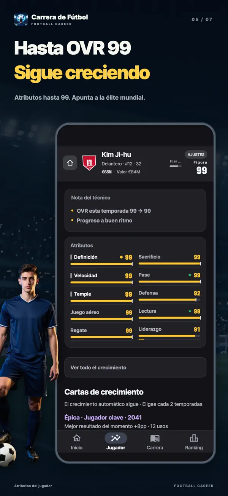
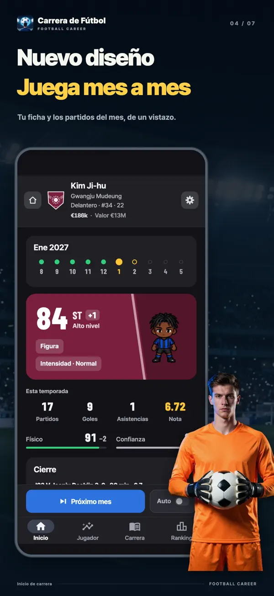
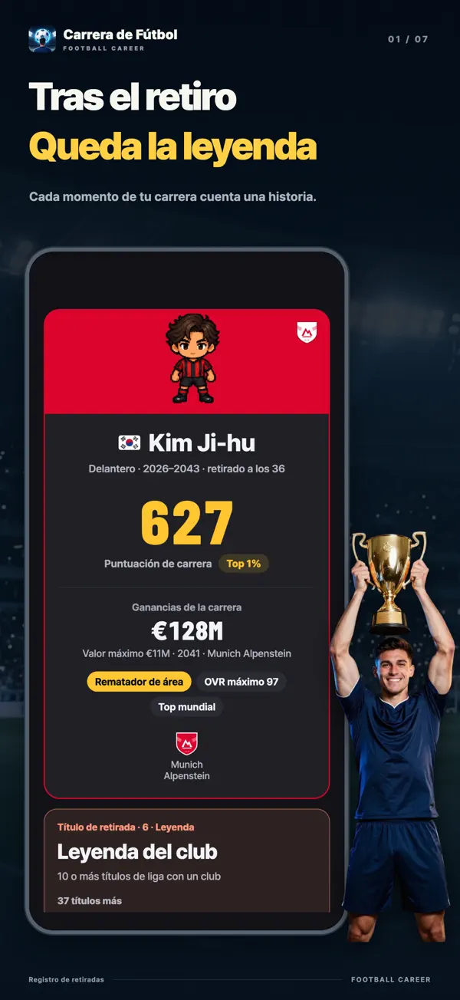
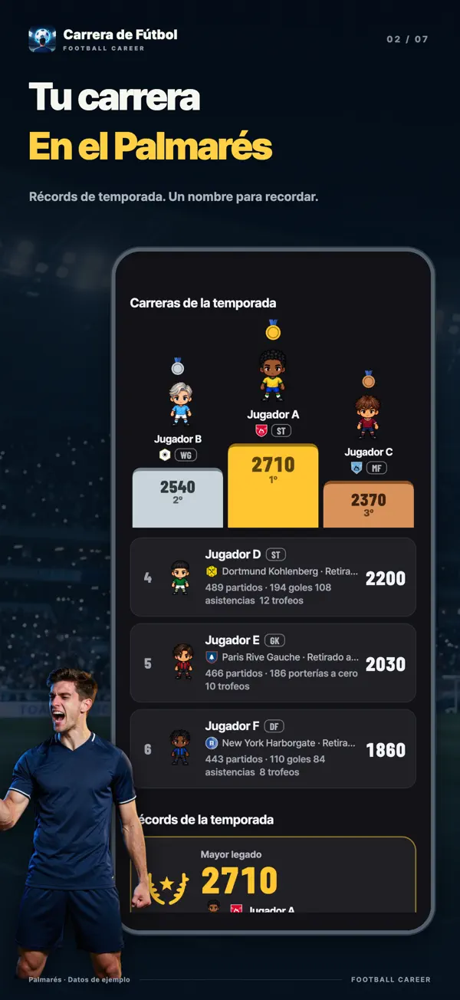
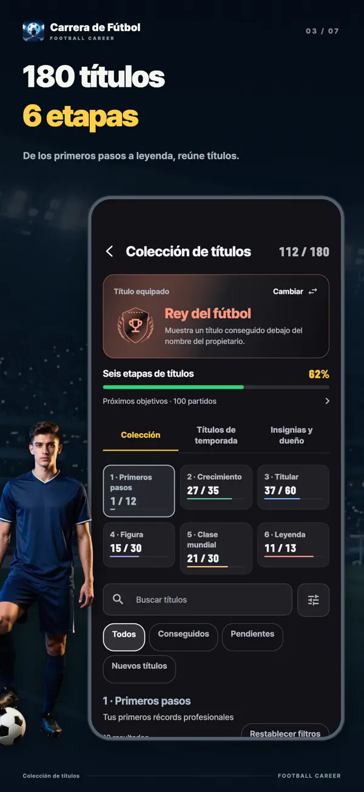
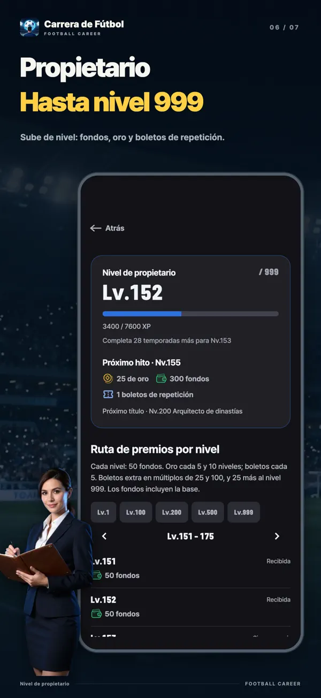
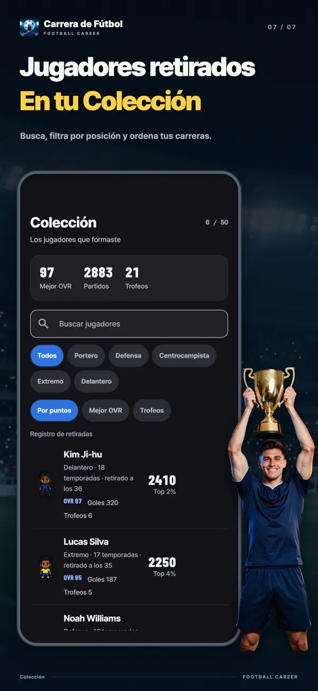

- YT Lab
- Simulador Carrera Fútbol Pro

Simulador Carrera Fútbol Pro Una carta puede cambiar tu carrera
En Simulador Carrera Fútbol Pro, cada dos temporadas eliges una de tres cartas de crecimiento de la misma rareza. ¿Mejorar tus atributos al instante, ampliar un límite oculto o cumplir una condición para llevarte una gran recompensa? Vive la carrera de un solo futbolista, desde la cantera a los diecisiete años hasta el retiro.
Elige tu próximo crecimiento
Delantero de 27 años · OVR 96Puedes repetir cada carta una vez. Su rareza no cambia.
Esta prueba usa las cartas y los cálculos reales de la aplicación. Recrea el momento en que un delantero estrella de 27 años recibe una ronda Legend, la más rara. Tanto al repetir como al sacar las siguientes cartas se usan las mismas opciones y probabilidades que en el juego. La prueba siempre vuelve a empezar con el mismo jugador.

Descarga gratuita con compras dentro de la aplicación. Disponible para iPhone y iPad con iOS 15 o posterior y para Android 7.0 o posterior.
Cada dos temporadas, una de tres
Tus atributos crecen automáticamente al jugar. Las cartas de crecimiento añaden decisiones a esa progresión. Al empezar y después cada dos temporadas, recibes tres cartas de la misma rareza y de familias distintas: te quedas con una. A mayor rareza, mayor efecto. La primera carta siempre es Épica.
Cartas con efecto inmediato
Mejoras en cuanto eliges. El foco da frutos aumenta un atributo principal en +6 y su techo en +3. Tapar huecos suma 4 al atributo principal más bajo y al secundario más bajo.
Cartas que amplían tus límites
Cada atributo tiene un techo oculto en el que se detiene el crecimiento automático. Un poco de potencial, Potencial abierto y Salto de potencial elevan ese límite. Las cartas pueden subir los techos hasta 95.
Cartas que premian tus logros
Cazagoles da +1 de Definición cada 5 goles; Estrella del partido, +2 a un atributo cada 2 MOM; Listo para despegar, +8 a un atributo principal tras 30 partidos. La recompensa hay que ganársela en el campo.
Cartas con un precio
Sprint explosivo da +8 de Velocidad a cambio de −3 de Juego aéreo. Talento diabólico da +12 al techo de un atributo principal y +10 al atributo, a cambio de −3 a uno secundario. Ganar algo también implica ceder.
Cartas que te dan más años
Segunda juventud reduce el envejecimiento a la mitad durante tres temporadas y alarga tu carrera 2 años. Última llama suma +6 a tres atributos principales, pero te retiras al terminar esa temporada.
Repetir cartas es gratis
Puedes repetir las cartas que no te convenzan, una a una. Mantienen la rareza y se sustituyen por una carta de una familia distinta a las otras dos.
Del banquillo al premio de Jugador mundial del año
No empiezas como titular en la élite. Pasas por la cantera y el filial, y te abres hueco desde el banquillo del primer equipo. Más allá te espera el premio a Jugador mundial del año, que reconoce al mejor de cada temporada. Tus cartas y tus actuaciones deciden hasta dónde llegas.
- 17años
Cantera
Empiezas en la cantera a los diecisiete años. Con el pack de inicio juvenil puedes empezar a los quince.
- 19años como máximo
Filial
Subes al filial al acercarte al nivel del primer equipo o al cumplir diecinueve años. El ascenso se decide al acabar la temporada.
- 16–21debut según la liga
Del banquillo del primer equipo a la titularidad
La edad de debut cambia según la liga. Llegas al primer equipo cuando tu edad, atributos y valoración de temporada superan los requisitos. La confianza del entrenador determina tus minutos.
- Veranoal terminar la temporada
Traspasos y renovaciones
Pide un traspaso o elige entre las ofertas. Negocia con tu agente el salario, la Promesa de titularidad, la Cláusula de rescisión y otras condiciones.
- 18+en el primer equipo
Selección nacional
Los jugadores del primer equipo de dieciocho años o más pueden recibir una convocatoria. El torneo mundial y los torneos continentales se alternan cada dos años.
- 36–41según la posición
Lo que queda tras el retiro
Por defecto, un Extremo puede jugar hasta los 36 años y un Portero hasta los 41. Las cartas y los eventos pueden alargar la carrera, y también puedes retirarte antes por decisión propia.
Juega mes a mes. Crece con cada partido.
Una temporada dura diez meses, de agosto a mayo, y tiene 38 partidos. Partidos jugados, goles, asistencias, porterías a cero, MOM y valoraciones se convierten en crecimiento mensual, con cifras que muestran cuánto mejora cada atributo. Avanza mes a mes o deja que el tiempo corra automáticamente.
Crecimiento del mesRegate 57 → 58 +1
Un gran mes puede darte el Jugador del mes, un puesto en el Equipo del mes o, si eres Portero, la Parada del mes. Lo deciden tus estadísticas, sin sorteos ocultos. Al final de la temporada puedes aspirar a Máximo goleador, Equipo de la temporada, Jugador del año y hasta Jugador mundial del año.
Imágenes del juego







Un juego de fútbol con otra perspectiva
Un futbolista, no un entrenador
No hay pantalla de plantilla, pizarra táctica ni presupuesto de fichajes. El entrenador decide tus minutos; si cambia, también puede cambiar el perfil de jugador que busca.
Las probabilidades, a la vista
En las situaciones de la temporada, cada decisión muestra de antemano sus tres resultados posibles, con barras y porcentajes. También puedes consultar cuánto influyen tus atributos, la confianza del entrenador, la condición y las cartas de crecimiento.
Cada liga, una carrera distinta
De Inglaterra, España, Alemania, Italia y Francia a Corea, Japón y Sudamérica. Cada liga tiene su propia edad de debut, salarios y cupos de extranjeros. Todos los nombres de ligas, clubes, jugadores y entrenadores son ficticios.
Te retiras. Tus récords se quedan.
Quedan tus estadísticas y una evaluación en seis ejes: calidad, producción, acumulación, premios, títulos y escenario. Verás en qué porcentaje superior estás frente a 20.000 carreras simuladas con las reglas del juego. Las carreras terminadas entran en las clasificaciones semanales, mensuales y generales, y en el Salón de la Fama de la temporada.
Preguntas frecuentes
- ¿Es gratis?
- Puedes descargarlo y jugar hasta el final gratis. Las cartas de crecimiento y repetirlas también son gratis. Las compras opcionales incluyen quitar anuncios, el pack de posiciones, el pack de inicio juvenil, el pack de apoyo, oro y tickets de repetición. Las tiradas de atributos iniciales tienen las mismas probabilidades, sean gratuitas, con anuncios o con tickets.
- ¿Se puede jugar sin conexión?
- La carrera y el guardado funcionan en tu dispositivo, así que puedes jugar sin conexión. Necesitas internet para las clasificaciones, las compras, usar oro y transferir tus datos a otro dispositivo.
- ¿Se puede jugar en PC o en la web?
- Es una aplicación para iPhone, iPad y Android. No hay una versión web para jugar en el navegador; esta página permite probar las cartas de crecimiento.
- ¿En qué posiciones puedo jugar?
- Portero, Defensa, Centrocampista, Extremo y Delantero. Portero y Delantero son gratis; el pack de posiciones desbloquea las otras tres. Cada posición tiene siete estilos de juego: 35 en total, todos gratuitos.
- ¿Cuántas carreras puedo llevar a la vez?
- Tienes tres espacios de carrera para desarrollar a tres jugadores a la vez. La nacionalidad determina la primera liga y la selección.
- ¿Hay jugadores o clubes reales?
- No. Todas las ligas, clubes, jugadores y entrenadores son ficticios.
- ¿Se publica mi nombre en la clasificación?
- Las carreras terminadas entran en la clasificación, pero puedes desactivarlo cuando quieras. Los nombres que hayas editado solo se publican con tu consentimiento.